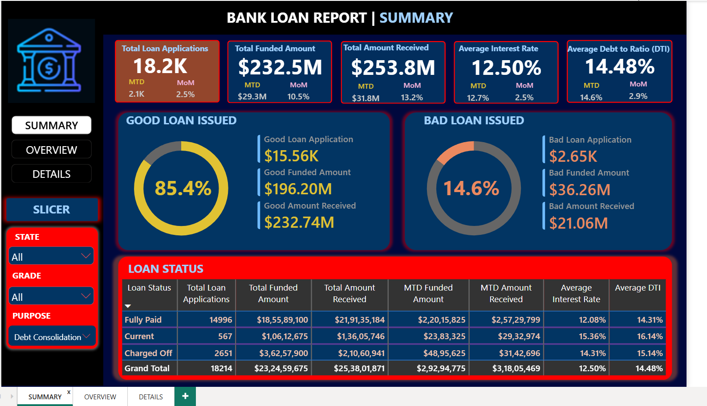
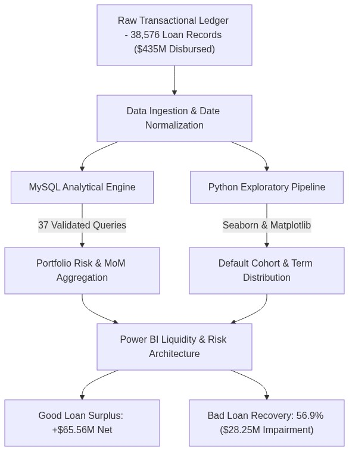

Bank Loan Analytics & Portfolio Credit Risk Intelligence.
Architected a "SQL-First as the Source of Truth" banking intelligence pipeline auditing 38,576 loan facilities totaling $435.76M in capital disbursements and $473.07M in cash collections across FY2021. Established automated risk reconciliation across MySQL (37 production CTE & window queries), Python exploratory models, and Power BI C-suite dashboards.
Interactive 7-View Portfolio Risk & Analytics Showcase
Switch between executive Power BI dashboards, dimensional loan slicers, and Python EDA risk distributions.

Macro lending health console auditing 38,576 applications. Visualizes $435.76M in funded capital against $473.07M cash received, isolating +$65.56M in good loan profits against the -$28.25M charged-off impairment write-off.
"SQL-First as the Source of Truth" Analytical Pipeline
How 38,576 loan records are ingested, cleaned for date formatting anomalies in MySQL, statistically audited across Python Jupyter workflows, and surfaced to C-suite leadership via Power BI.

38,576 retail banking loan facilities with text-encoded dates, annual incomes, DTI ratios, FICO grades (A to G), and verification statuses.
37 production queries enforcing date sanitization (`STR_TO_DATE`), multi-period MoM CTEs, and conditional aggregations for Good vs Bad loan ratios.
Statistical analysis in Pandas, Matplotlib, Seaborn, and Plotly: evaluating term exposure (36 vs 60 mos), homeownership treemaps, and state funding.
3-page suite (Summary, Overview, Details Grid) with dynamic measure formatting, cross-filtering, and institutional liquidity health benchmarks.
Underwriting Risk Rules & Solvency Thresholds
Quantitative credit screening rules enforced across SQL validation logic and Power BI underwriting alerts to mitigate uncollateralized defaults.
High credit score borrowers with DTI < 12% and verification status 'Verified'. Qualify for preferential APRs (7.5% - 10.2%) with automatic approval processing.
Mid-tier credit borrowers with DTI between 12% and 18%. Requires secondary verification of income and maximum 36-month repayment terms to preserve liquidity velocity.
Borrowers driving disproportionate share of the -$28.25M charged-off write-off. Characterized by elevated interest rates (18%+ APR) and DTI > 18%.
Production SQL Queries & Banking Risk Formulas
Mathematical formulations and queries powering portfolio liquidity auditing and charge-off default modeling.
WITH mtd AS (
SELECT SUM(loan_amount) AS MTD FROM financial_loan
WHERE MONTH(STR_TO_DATE(issue_date, '%d-%m-%Y')) = 12
AND YEAR(STR_TO_DATE(issue_date, '%d-%m-%Y')) = 2021
),
pmtd AS (
SELECT SUM(loan_amount) AS PMTD FROM financial_loan
WHERE MONTH(STR_TO_DATE(issue_date, '%d-%m-%Y')) = 11
AND YEAR(STR_TO_DATE(issue_date, '%d-%m-%Y')) = 2021
)
SELECT CONCAT(ROUND((MTD - PMTD) / PMTD * 100, 2), '%') AS MoM_Growth
FROM mtd CROSS JOIN pmtd;Quantifies the +13.04% year-end surge in capital disbursements ($53.98M funded in December).
WITH CTE AS (
SELECT
COUNT(CASE WHEN loan_status IN ('Fully Paid', 'Current') THEN id END) AS Good_Loans,
COUNT(CASE WHEN loan_status = 'Charged Off' THEN id END) AS Bad_Loans,
COUNT(id) AS Total_Loans
FROM financial_loan
)
SELECT
ROUND((Good_Loans / Total_Loans) * 100, 2) AS Good_Loan_Pct,
ROUND((Bad_Loans / Total_Loans) * 100, 2) AS Bad_Loan_Pct
FROM CTE;Establishes 86.18% healthy performing assets ($435.79M collected) vs 13.82% default risk cohort.
SELECT
SUM(loan_amount) AS Bad_Loan_Funded,
SUM(total_payment) AS Bad_Loan_Recovered,
(SUM(loan_amount) - SUM(total_payment)) AS Unrecovered_Write_Off,
ROUND((SUM(total_payment) / SUM(loan_amount)) * 100, 2) AS Recovery_Rate_Pct
FROM financial_loan
WHERE loan_status = 'Charged Off';Identifies the $28.25M capital loss ($37.28M recovered against $65.53M funded = 56.9% recovery).
Avg Portfolio Interest Rate =
AVERAGEX(
financial_loan,
financial_loan[int_rate]
)
Avg Debt To Income =
AVERAGEX(
financial_loan,
financial_loan[dti]
)Tracks 12.05% portfolio APR yield and 13.33% DTI ratio, well within institutional risk limits.
Banking Decision Support & Capital Allocation
Discovered that lower grades (E, F, G) account for disproportionate default rates. Recommended adjusting risk-based pricing and requiring collateral attachments for DTI > 18%.
36-month loan terms represent 73.2% of application volume (28,237 loans) with superior repayment velocity compared to 60-month facilities, boosting liquidity reinvestment turnover.
Identified Debt Consolidation as the primary lending purpose. Formulated targeted balance-transfer promotions for grade A/B borrowers with lower credit utilization.